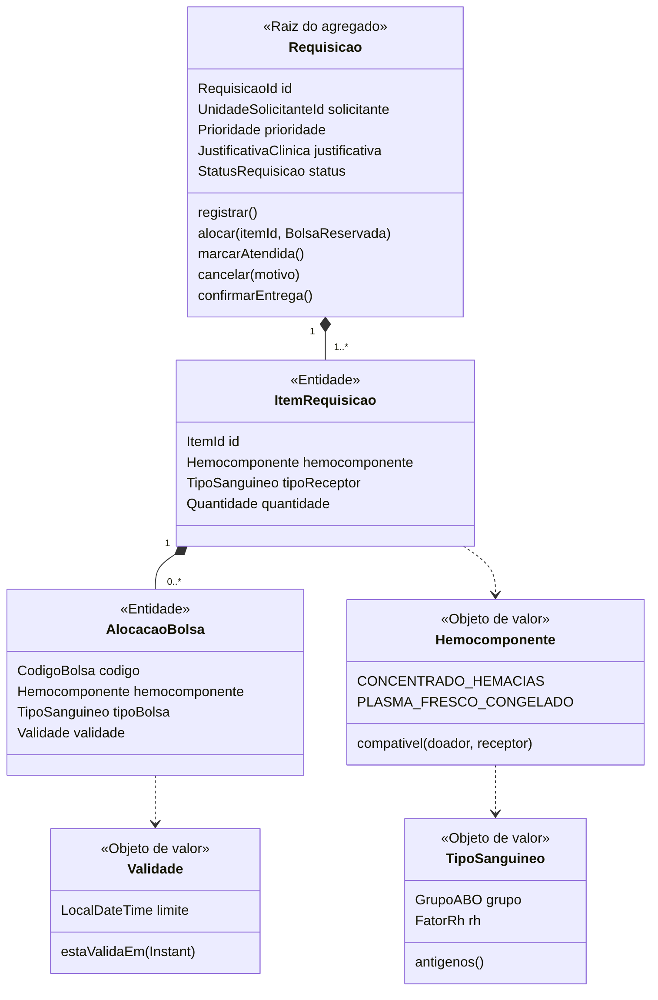
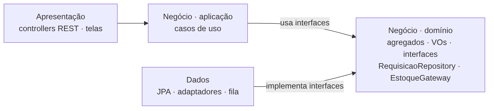

| Camada | Contém | Depende de |
|---|---|---|
| Apresentação | Controllers REST, DTOs, telas | Aplicação |
| Negócio | Casos de uso, agregados, interfaces (RequisicaoRepository, EstoqueGateway) | Ninguém de fora: domínio é Java puro |
| Dados | Repositórios JPA, EstoqueClient, fila | Domínio (implementa as interfaces) |
| # | Comando da Requisição | Resposta à Requisição | Compensação |
|---|---|---|---|
| 1 | (local) registra o pedido | — | Cancela e avisa o hospital |
| 2 | ReservarBolsas → Estoque | BolsasReservadas | LiberarReserva |
| 3 | (local) aloca e marca ATENDIDA | — | Desaloca, volta a EM_ATENDIMENTO |
| 4 | MontarRemessa → Expedição | RemessaMontada / RemessaFalhou | CancelarRemessa |
| 5 | AbrirViagem → Transporte | ViagemIniciada, EntregaConcluida | Sem volta: vira reposição |
Contexto: 7 pessoas, 1 esteira, pico de 3 a 120 req/s.
Decisão: 5 módulos em 3 camadas; Transporte extraído acima de ~10 leituras/s: moderado 2,7/s fica, alto 20/s sai.
Consequência: menos custo e transação ACID; escala em bloco.
Contexto: salvar e publicar em dois passos pode perder o evento.
Decisão: o evento vai para a tabela outbox na mesma transação.
Consequência: nenhum evento perdido; consumidores tratam duplicatas.
| Baixo (piloto) | Moderado (PE) | Alto (Nordeste) | |
|---|---|---|---|
| Hospitais · usuários | 20 · 60 | 150 · 600 | 1.200 · 5.000 |
| Pedidos por dia | 150 | 1.500 | 12.000 |
| Pico λ | 3 req/s | 20 req/s | 120 req/s |
| Leituras de telemetria | 0,3/s | 2,7/s | 20/s → Transporte extraído |
| L = λ × W | 3 × 0,20 = 0,6 | 20 × 0,20 = 4 | 120 × 0,25 = 30 |
| Instâncias (L ÷ 7) | 1 → usamos 1 | 1 → usamos 2 | 5 → 3 a 6 + 2 |
| Disponibilidade (meta) | 99,0% | 99,9% | 99,9% |
| SLA composto | — | 99,93% ✓ | 99,93% ✓ |